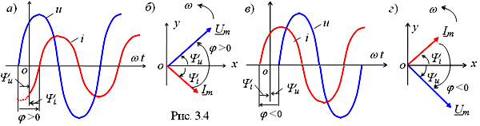
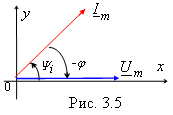

Сдвиг фаз между двумя гармоническими функциями – это разность начальных фаз двух синусоидальных функций, например, u1 и u2, т. е.
| Ψu = Ψu1 - Ψu2. | (3.4) |
Сдвиг фаз между напряжением u(t) и током i(t)
на неразветвленном участке цепи или на её входе обозначают греческой буквой φ, т. е. φ = Ψu - Ψi. Сдвиг фаз φ - алгебраическая величина.
Знак угла φ на временных диаграммах определяют по правилу, изложенному для начальных фаз: отрезок на оси абсцисс проводят от нулевого значения напряжения u(t) к ближайшему нулевому значению тока i(t) (рис.3.4, а и в), а на векторных диаграммах - по направлению отсчёта угла φ от вектора тока Im к вектору напряжения Um: если указанное направление угла φ совпадает с направлением вращения частоты ω векторов на ВД, то угол φ берётся со знаком "+" (рис. 3.4, б), если направление отсчета угла φ совпадает с направлением хода часовой стрелки, то угол φ берётся со знаком "-" (рис. 3.4, г).
Знак угла φ на временных диаграммах определяют по правилу, изложенному для начальных фаз: отрезок на оси абсцисс проводят от нулевого значения напряжения u(t) к ближайшему нулевому значению тока i(t) (рис.3.4, а и в), а на векторных диаграммах - по направлению отсчёта угла φ от вектора тока Im к вектору напряжения Um: если указанное направление угла φ совпадает с направлением вращения частоты ω векторов на ВД, то угол φ берётся со знаком "+" (рис. 3.4, б), если направление отсчета угла φ совпадает с направлением хода часовой стрелки, то угол φ берётся со знаком "-" (рис. 3.4, г).


Примечание. При вычерчивании любого вектора на плоскости отсчёт начальной фазы всегда ведут от положительного направления полуоси абсцисс. Если, например, начальная фаза напряжения Ψu = 0, то вектор Um направляют по оси ox, а вектор тока Im - в соответствии с его начальной фазой Ψi. В этом случае угол сдвига фаз (рис. 3.5)
| φ = Ψu - Ψi = - Ψi и Ψi = - φ | (3.5) |